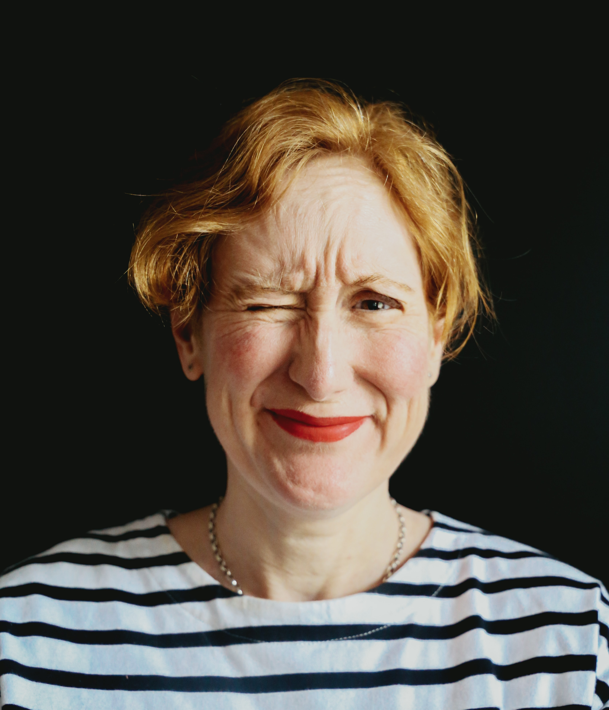

Hey, I'm
Elliott.


PROFESSIONAL EXPERIENCE
Full-Time Student and Freelance Web Developer
2020 - PRESENT
After transferring from the College of William & Mary in 2022. I began the rest of my time in University at the prestigious University of Virginia in Charlottesville, Virginia. A place that seemingly can't get enough of their founder and the third president of the United States, Thomas Jefferson.
Studying Computer Science here is an incredible experience and privelage and has lead me down a path towards a career in Software Engieering and Full-Stack Development. Go Hoos!
EDUCATION 2 - 2
University of Virginia
2022-2024
COMPUTER SCIENCE
A World-Class Education at Thomas Jefferon's University.
After transferring from the College of William & Mary in 2022. I began the rest of my time in University at the prestigious University of Virginia in Charlottesville, Virginia. A place that seemingly can't get enough of their founder and the third president of the United States, Thomas Jefferson.
Studying Computer Science here is an incredible experience and privelage and has lead me down a path towards a career in Software Engieering and Full-Stack Development. Go Hoos!
EDUCATION 1 - 2
The College of William & Mary
2020-2022
COMPUTER SCIENCE - INTERNATIONAL RELATIONS
An Enriching Experience at a Small Hometown College.
Nestled in my hometown of Williamsburg, Virginia, I am proud to call the College of William and Mary a part of my education and life. Alma mater of Thomas Jefferson and George Washington, W&M offered a top-notch education and a portal to the past.
I left William & Mary in 2022 to pursue a richer education in Computer Science and more opportunities at the University of Virginia. A bittersweet transfer.